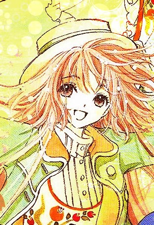

个人简历
黎秋莎
Tel:15928903328
Ad:四川省成都市双流县华阳镇滨河花园
PC:610213
Email:lqs102890@126.com
个人信息
毕业学校 北京林业大学 学历 本科 专业 工业设计
求职意向 产品设计、交互设计、包装设计、平面设计等相关工作
个人技能
（1）手绘能力突出，擅长快速表现和效果图绘制，并且有多幅个人作品。
（2）熟练掌握：Photoshop、AI、CAD、Rhino、Keyshot、Sketchup等
二维和三维绘图设计软件。
（3）可操作多种计算机应用办公软件Word/Excel/Powerpoint
（4）主修外语语种及水平：英语CET-6（540分）
学习及工作
经验
1.2010年7月由学校组织去顺德、深圳、香港等设计城市进行考察学习。
期间到嘉兰图、东菱、万家乐、华南家电研究所等设计公司和企业参观实
习，到香港理工进行交流学习。
2.2011年10月至12月在国家轨道交通安全与工程控制实验室进行项目设计。
参与德国Knorr（克诺尔）公司地铁车厢及内饰设计。
3.2012年4月《北京城市报刊亭色彩及造型改良设计建议报告》文章获得
“中国工业设计发展十年优秀论文评选活动”的论文奖。
4.2012年2月至10月在国金黄金公司担任包装设计师，对公司产品的包装
从造型、结构、图样、材料进行设计。
自我评价
本人学习成绩优异，大学期间专业排名年级前五。
本人具备优秀的设计能力及设计研究能力。具有较好的美术功底及艺
术素养，手绘能力突出，能够根据不同需要进行创意设计制作，熟练掌握
多种电脑制作软件，能够高效率地完成工作。
大学期间积极参加各类设计竞赛活动，有不俗的表现；阅读大量书籍
和网络上的最新设计资料，对设计有了更深的了解，同时形成了自己的独
特观点。
动手能力强，擅长自学，可塑性强。创新能力强，设计思维活跃。
本人责任心强，做事认真负责。性格开朗，易于沟通，具有较好团队
意识。
本人具备扎实的设计专业知识基础，较强的实际操作能力；同时具
备良好的沟通协调能力、学习能力及创新能力。
若贵公司觉得我是合适的人选期盼与您的面谈！